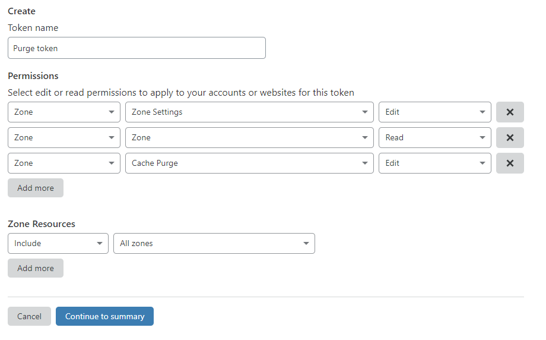
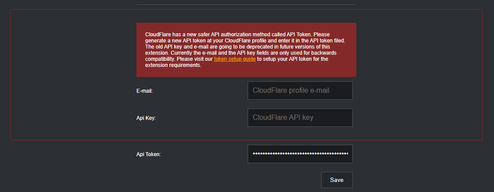

Cloudflare API token setup instructions.
The benefits of an API token versus an API key
The CF-Purge extension is pleased to announce the support of the new Cloudflare feature - API tokens. The API tokens are a secure way to set specific access permissions of API clients like the CF-Purge extension. Previously, the CloudFlare API was using Global API authorization keys which had a wide range of permissions and if obtained by an attacker the API keys were able to control all cache configurations, DNS settings and other Cloudflare CDN functionalities. The API keys were too general for the focused needs of the CF-Purge extension. With the introduction of the new API Tokens, users are able to set specific permissions of an API token and minimize the risk. The CF-Purge extension doesn't need the user's e-mail address and the global API key anymore. These fields are left for backwards compatibility and will be removed in a future version of the extension.Cloudflare has great documentation on how API tokens function here: API tokens
Setup API token instructions
1. Login to https://cloudflare.com and navigate to https://dash.cloudflare.com/profile/api-tokens
2. Please follow the instructions on the Cloudflare support site to generate an API token: Cloudflare API tokens support.
3. The CF-Purge extension requires the following permissions on a token in order to function properly:

4. Generate the API token with the above permissions and go to the CF-Purge extension Options page by right clicking on the extension icon and selecting "Options".
5. Please clear your E-mail and Api Key from the fields and set the Api Token field as shown:

6. Save your changes and enjoy a more secure way of purging your cached CDN content.
If you notice some functionality issues with the extension, this probably means
that the API token
doesn't have the necessary permissions for a certain CloudFlare zone. Please revisit step 3 and generate
a new API token with the proper permissions.